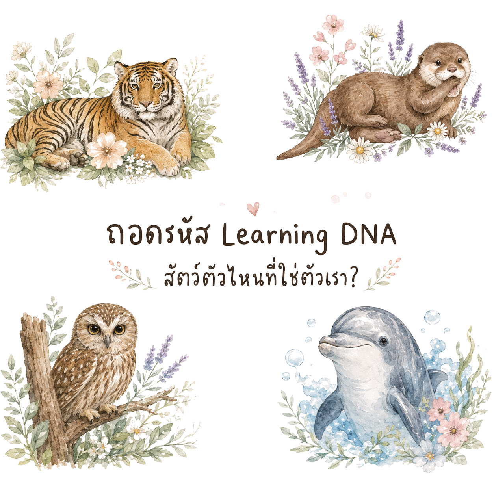
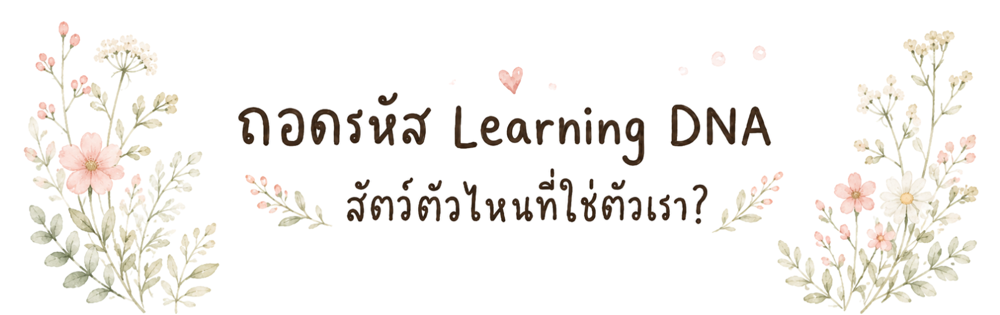

แบบทดสอบ DNA การเรียนรู้ของตัวคุณ ที่จะพาไปค้นหาว่า คุณมี DNA การเรียนรู้เหมือนสัตว์ชนิดไหน ทำมาให้เล่นกันสนุก ๆ ตอบได้เลยไม่มีผิด ไม่มีถูกนะคะ ☺️ โดย ทีม Learning and Development, TED

DNA การเรียนรู้ของคุณคือ